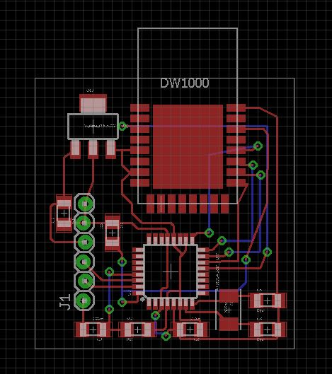
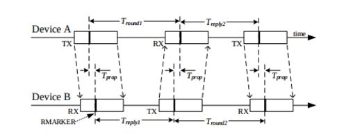

Two-Way Ranging, Android App, and a New Board Layout
This week we revised our board layout, implemented a two-way ranging protocol using the DWM1000s, and created an example demo Android application.
We also updated the website for the second checkpoint and added the Use Cases, Interaction Diagrams, and Architecture sections to the Documentation part of our website (above).
Second Iteration of Board Layout
We found a voltage regulator with a bigger footprint than our original choice. We should have no problem soldering this new one.
Instead of using a through-hole Atmega328, we decided we would use the surface mount TQFP version. This allowed our board to be smaller and more compact. However, our original plan was to program the chips off-board because of the 5V nature of our AVR programmer and the 3V nature of the DWM1000s (both would need to be connected via SPI and it would be hard to separate them). However, adding a surface mount chip meant we would need to program on-board, and therefore need to add the 6-pin AVR headers, and find a way to not fry the DWMs. We found out that there was a setting in the AVR programmer that allowed it to match the power level of the circuit it was programming when it is not the power source, so we were all set.
After all of that research we decided that because we technically don't need to be able to program the chip once it is on our PCB, we didn't want to expose the programming headers and have them take up more room on the board. Luckily, we found this TQFP Breakout Socket from Adafruit which should allow us to program our surface mount chips away from our PCBs.
Two Way Ranging
After a lot of hard work we finally implemented a two-way ranging protocol using the DWM1000s. Here we have the specific roles of Tag and Anchor defined and they are able to determine the range between the two through the passage of three messages. This was an exercise in starting the protocol off, getting us closer to the final ranging protocol we decided on, descriped in the Interaction Diagrams section above.
Here is a diagram describing the initial protocol we implemented:
Android App
This week we created an Android App implementing the app idea we described last week. We chose to create an Android app mostly because our team member in charge of this portion is in an Android development class and is interested in getting as much experience as possible.
Deliverables for the week:


{kind=link}
{kind=link}
{kind=link}